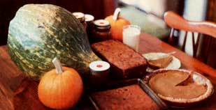

Here's a delicious answer to the question...
For a good many years I regretted-but thought unavoidable-the waste that occurred when I'd have to cut open (and thus expose to spoilage) a huge pumpkin or winter squash in order to make a few pies. The dilemma was solved recently, though, when I came across a recipe for "pumpkin butter" ... a treat that's both delicious and easy to store.
To make 15 to 17 quarts of the versatile spread, you'll need 40 pounds of pumpkin or squash (cooked and pureed), 2-1/2 to 3 quarts of honey, 6 tablespoons of cinnamon, 4 teaspoons of nutmeg, and 4 teaspoons of ground cloves.
Make sure the fruit is free of dirt, then cut it in half and scoop out the seeds and the stringy insides. If the pumpkin or squash you're using has a tough skin, the easiest way to cook it is to simply bake the two sections in the oven at 325°F until they're very soft . . . and then remove the "meat" from the shells with a big spoon.
However, if you're going to use a food mill-rather than a blender-to process the pulp (and, surprisingly, I've found the hand-operated strainer to be the more time-efficient device), you may want to cut soft-skinned varieties in 2" chunks and bake the pieces. (If you don't have access to an oven, just put the cubes into your canner-along with an inch or two of water-and steam them until they're done. My ninequart canner will hold about 40 pounds if it's packed full. So I'd estimate that one of the more common seven-quart canners can be used to hold about 30 pounds of butter-to-be.)
THICK AND LUSCIOUS
When your pumpkin or squash is fully cooked, puree it (using either a blender or a food mill, as you prefer), put the yellow-orange liquid into your canner or a big kettle (until the container is about half full), and start it cooking. Pumpkin butter, you'll find, can be prepared in only an hour or two . . . a fraction of the time required to process apple butter. When the spread starts to thicken, add the honey and spices (which will turn the mixture a golden brown) and taste-test to see whether it pleases your palate. Now let the sauce simmer-stirring it every so often to prevent sticking-and when it's thick enough to support an upright wooden spoon, you're ready to can!
After sterilizing the jars for ten minutes and the lids for five, pack the hot mixture to within one inch of the top of the containers, seal them, and process the butter for ten minutes in a boiling water bath.
Once your canning's done, you may well wonder just what you're going to do with 15 to 17 quarts of pumpkin butter! Well, fear not .. . the delicious spread is incredibly versatile. Here are a few of my own favorite recipes ... just to get you started.
YEASTED PUMPKIN BREAD
Dissolve 1 teaspoon of yeast in 1/4 cup of warm water and let it stand while you combine 1/4 cup of molasses, 1/4 cup of honey, and 1/2 cup of melted butter. Next stir in 1-1/2 cups of pumpkin butter, 1/3 cup of water or milk, 1 cup of whole wheat flour, 1/2 teaspoon of cinnamon, and 1/2 teaspoon of ground cloves. Now add the y east and let the mixture rise in a warm place for 1 or 2 hours . . . after which you can work in 2 more cups of whole wheat flour and 1 cup of chopped hazelnuts or walnuts. Finally, spoon the dough into a greased loaf pan ... let it rise until it almost doubles in size . .. then bake it at 350°F for 1 hour.
PUMPKIN BUTTER PIE
Combine 1-3/4 cups of pumpkin butter, 1/8 to 1/4 cup of honey or molasses, 1 cup of milk, 2 eggs, 1 teaspoon of cinnamon, and 1/2 teaspoon of ground cloves. Then pour the mixture into an unbaked whole wheat pie crust, and put it in a 350°F oven until the custard sets (about 65 minutes).
BANANA-PUMPKIN MILKSHAKE
Process 2 cups of pumpkin butter, 1 cup of walnuts, and 2 cups of milk (you might try substituting whipping cream for part of the milk) in a blender until the nuts are totally shredded. Add 2 bananas (they're best frozen) and 2 more cups of milk, and blend the drink thoroughly.
PUMPKIN BUTTER CAKE
Beat two egg whites until they're stiff. Next, cream 1/2 cup of melted butter and 1 cup of honey together . . . and stir in 1 cup of pumpkin butter, 2 egg yolks, and 1-1/2 cups of whole wheat flour. Add 1 tablespoon of cinnamon, 1 teaspoon of vanilla extract, 1 cup (or more) of chopped walnuts, and 1 cup of raisins. Fold in the egg whites, and bake the treat for 1 hour at 350°F in a greased and floured 8" or 9" cakepan.
|
 |
|
|